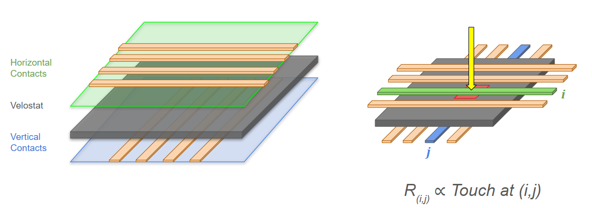
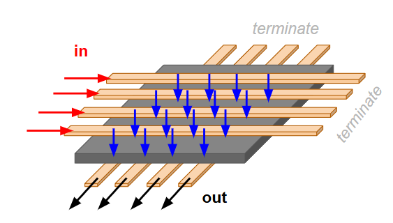
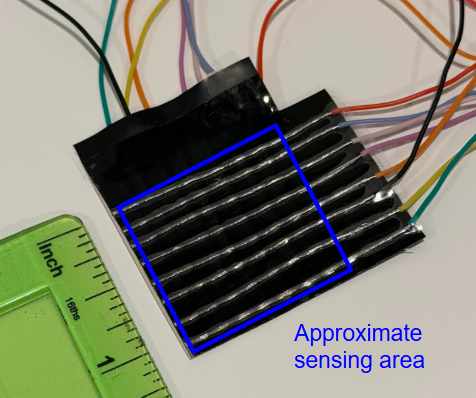
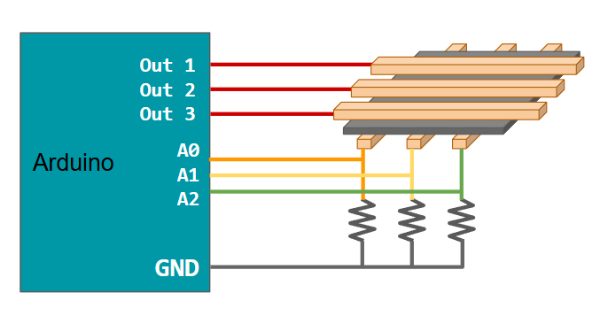
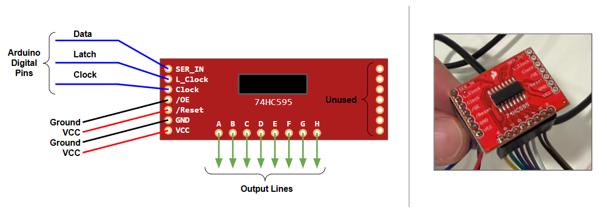
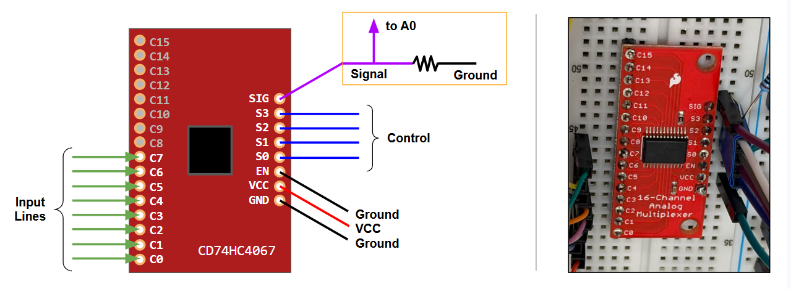
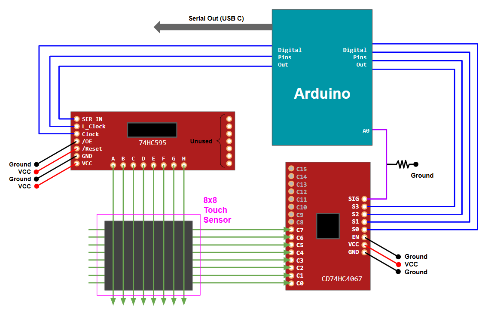

An 8x8 Touch Sensor
Reconstructing FlexiTac, Part Two
When capturing demonstrations to train diffusion policies, VLAs, or world models, contact points and forces between surfaces are difficult to record. These phenomena occur exactly where vision is often occluded, and will not visually register at all if two bodies in contact are completely rigid. Therefore, whether performing teleoperation or collecting data from a human directly, it may be of interest to have sensors that record pressure or "touch" at key locations.
The previous post outlined how to make a basic touch sensor with Arduino and velostat, demonstrating one "cell" of the FlexiTac sensing grid. In this post, I will continue working towards a construction of an 8x8 touch sensing grid following their designs.
I should note up front that the goal of this prototyping was to (1) build a touch sensor by hand in order to (2) understand and explain how it works. The finished product is noisy and has lots of sensing artifacts when you interact with it, which I will explain further below. After this stage, the proper way forward would be to follow the FlexiTac tutorials in having the sensor constructed for you as a flexible PCB. I am hoping that in the future I will be able to explore this as a part three.
The Grid
To restate what we want to build: the core of FlexiTac is essentially comprised of three layers: a series of electrical contacts running one way, a sheet of velostat, and a series of contacts running the other way, such that the contacts criss-cross and also create a gridded velostat sandwich. Where two of these lines cross, we have exactly the setup described in the prior post: a small area of velostat with a contact on either side, and measuring the resistance between those contacts will tell us the amount that the velostat is compressed.

Note that for a given position of interest, the current will flow in from one wire, through the velostat, and back out a wire on the other side. This means that only one end of the lines are actually connected to anything. Beyond the last contact point, the wires are essentially unused and will not have current flowing through them if we have done everything correctly.

Building a Sensor
Since I am building this by hand, each line will just a be a wire, stripped for the last few inches to expose a conductive surface. I tried to find something small and flexible to remain in the spirit of the "flexi" aspect of FlexiTac: a sensor that can slightly bend and deform as needed when squished between two surfaces. I ended up using a stranded 30 gauge wire.
The construction is pretty straightforward: Strip eight wires carefully to keep the inner strands intact, arrange them over a piece of velostat with lots of tape securing everything, and then put a piece of packing tape down to hold that side together. Flip the sensor, turn 90 degrees, and repeat on the other side. I highly, highly recommend using eight different colors of wire for your own sanity. I ended up with an 8x8 grid that has a sensing area of about one square inch.

To get a stream of readings from the sensor, we just need to sweep over all such contacts over and over again. After each sweep, we can package up the full NxM grid of readings, and we have a nice matrix of touch.
I was not worried about throughput for this exercise, and ran my sensor at about 10Hz (i.e., ten full sweeps per second). This could be made significantly faster if desired, and the FlexiTac Arduino code is written for much higher throughput.
So how do we actually perform a sweep? Let’s say our grid was really small, say 3x3. Then we could just extend our original one-cell design, now with three output lines and three input lines:

Then, we could programmatically cycle through which output line was "on", and for each of those, cycle through the input lines which detect voltage.
This is the right idea, but we would soon run out of pins on the Arduino (for example, I am using the UNO 4 which only has 5 analog inputs). We need to build a version of this system that can support many more inputs and outputs. Fortunately, FlexiTac already accounts for this and we can explore their solution: a shift register for multiple outputs and a multiplexer for multiple inputs.
More Lines Out: Shift Register
To be able to output voltage on more distinct lines, we will use a shift register. A shift register is a chip that internally connects a set of lines to either an input voltage or ground, essentially acting as a bank of on/off switches.
The chip internally stores a queue of N bits (in our case, N=8) that dictate the on/off status of each line. It is called a shift register because the way we control these switches is by passing in one bit at a time, and shifting the entire buffer by one, discarding the extra bit that is pushed out. We do this over two connections: a data line that sends either 0 or 1, and a clock line that tells the chip when to read. To send 010 we would:
Set data to 0
Trigger a read of data via the clock line
Set data to 1
Trigger a read of data via the clock line
Set data to 0
Trigger a read of data via the clock line
Once we have passed in the bits we want to either shift (or entirely replace) the previous queued bits, we send a latch signal on a third connection to apply those settings to the connected lines. Note that we do not actually need to do this all manually- Arduino will handle the sending of a binary sequence for us. We need to turn the latch pin LOW before sending the binary, and switching back to HIGH afterwards.
Example: Suppose the shift register currently has only line six turned on, and we instead want lines three and four turned on. The chip currently holds 00000100, and we instead want 00110000. We would set latch LOW, and then pass 0, 0, 0, 0, 1, 1, 0, 0 to shift out the previous settings, resulting in the buffer holding our desired 00110000. Then we set latch HIGH to apply these.
I decided to use the 74HC595 breakout from SparkFun, which is wired up as follows:

The input pins can be a bit confusing (we have more than the ones I just talked about):
SER_IN: This is the data line, over which we send 0 or 1
L_Clock: This is the latch line. We set this LOW when writing new values and HIGH to apply them.
Clock: This is the clock line, used to tell the chip when to read from data.
/OE: Output Enable. This is basically a master off switch that overrides everything. You set it LOW to allow the chip to control the lines individually, otherwise everything is off. Since we don’t need to have control over this, we can just connect to ground.
/RESET: Similar to above, but for the internal buffer. If this is set LOW, it wipes out all values in the chip. We don’t ever need to force-clear everything, so we can just connect it to VCC.
GND: What an output line will connect to when 0 is applied.
VCC: What an output line will connect to when 1 is applied.
A through H: Our output lines.
This looks like a lot, but really we just have to deal with the first three. The Arduino code to cycle through the lines and set one on (and the others off) is pretty simple:
// having set pins above
for(int i =0; i<8; i++){
int binary_out = 1 << i;
digitalWrite(latchpin, LOW);
shiftOut(datapint, clockpin, MSBFIRST, binary_out);
digitalWrite(latchpin, HIGH);
}
Note that << is the bitshift operator, which shifts a binary representation by N places. Since we want only one line active at a time, we can shift the representation of 1 (full written as 00000001) by however many places we want. Using zero indexing, line 3 would be 00000001, shifted 3 places, to make 00001000.
This serves as our mechanism for controlling eight lines of output with only three digital pins. For larger setups, you can chain shift registers together (essentially creating a longer buffer), or just buy a larger shift register if you need, say, 16 outputs.
More Lines In: Multiplexer
On the other side of our sensor, we have eight lines running perpendicular to our input lines, and we want to be able to select which of these to read from. To do this, we will use a multiplexer, the CD74HC4067 from SparkFun.
This is, in my opinion, much easier to understand than the shift register. We have N lines coming in (this board happens to have 16, but we will only use 8). We want to select one of these. To do this, we supply the multiplexer chip with four values (by setting four separate output pins high or low). This corresponds to the binary of which line we want to read. The multiplexer then maps that line to a common signal pin which we can receive.
In other words, we use N pins to select among 2^N inputs. If we want to read line 5, we set our four control pins to 0101, and then read out input pin to see what is on line 5. If we want to read line 6, we set our control pins to 0110 and check out input pin. And so on.

For completeness:
Our input lines are on the left. We will only use C0 through C7.
SIG: This is our connection point for whatever line is currently selected.
S0 through S3: Our four binary settings to choose an input.
EN: Similar to OE on the shift register, this is a master-enable pin that is connected to ground when we want to enable the chip.
Recall from the prior post that we really want to detect the resistance of the velostat between our currently selected line from the shift register and the line from the multiplexer. We do this with a voltage divider, and since only one line will ever be active at once we can just do this downstream of the multiplexer. This is highlighted above in the orange box.
All Together
Now we just need to put these two halves together: in an outer loop, we select a output line on the shift register, which we select and enable using three digital pins (data, clock, and latch).
In an inner loop, we then cycle through all the incoming lines from the other side of the sensor. To do this we need five more pins: four digital control pins (to select among multiplexer inputs), and one analog pin which reads from the voltage divider we constructed at the signal output from the multiplexer.
Here is an attempt at a single diagram:

To actually get the data from this process, we can use Arduino’s serial writing commands. This is often introduced as something like a print statement when learning Arduino: the board sends text and the Arduino IDE shows it in an output window. However, other programs (i.e. python) can read this incoming text as well, providing an easy way to send our data directly into a python program.
I did not spend much time processing the data on the python side, other than to subtract away a mean value that is collected when the program first boots up, and to discard values below a threshold. This is clearly an area for much improvement before using such a sensor in a real system.
Results
This does actually work! At this point we really need animations / videos to show it in action, so I attempted to record some below. Capturing webcam data and serial in at the same time is a little wonky, so these are slightly out of sync. When running "live" there is not a delay in the sensing.
Testing small contacts:

Testing larger contacts:

A few things:
We can clearly see multiple, simultaneous, pressure-sensitive readings. This is most clear in the example using thumbs.
Although the grid is coarse, there is some notion of area. Compare the response from the pencil eraser to the thumb press.
There are some artifacts in other areas of the grid, which I believe are mainly due to my construction. Between the packing tape and the not-perfectly-flexible wires, it is easy for force in one location to create tension in another. We especially see this around the edges where the sensor is flexing against the wires that are taped down (see right side in the thumbs example).
The sensor is not nearly as sensitive as the single-cell in part one. As you play with the grid and the forces squish it around, the average reading corresponding to "no pressure" drifts. To mitigate this, I purposefully was more aggressive about discarding low readings.
I think most of the issues above would be solved by better construction (PCB), as well as better filtering of the sensor readings. It is also not clear to me how well this type of sensor would operate on a non-flat surface. For example, if this were covering a moving joint or something very deformable, there seems to be a conflation of "sensor is changing shape" and "sensor has pressure applied to it". Both are deformations that alter the resistance of the velostat.
However, that may not be a bad thing as this type of sensor gets more and more sophisticated: by responding to all deformations, you might be able to capture the shape of whatever it is covering. For example, if a human hand were covered in a tight mesh of this sensor, you could detect touch all over the hand. But as the hand moves and bends the sensor grid, could you also determine the position of the joints in the fingers as well?
Recent Posts:
An 8x8 Touch Sensor
Reconstructing FlexiTac, Part Two
May 25, 2026
Thoughts on Hand Capture
And Reconstructing FlexiTac, Part One
May 23, 2026
On Shuffling Tokens
Preparing Trillion-Token Datasets
May 12, 2026
More Posts